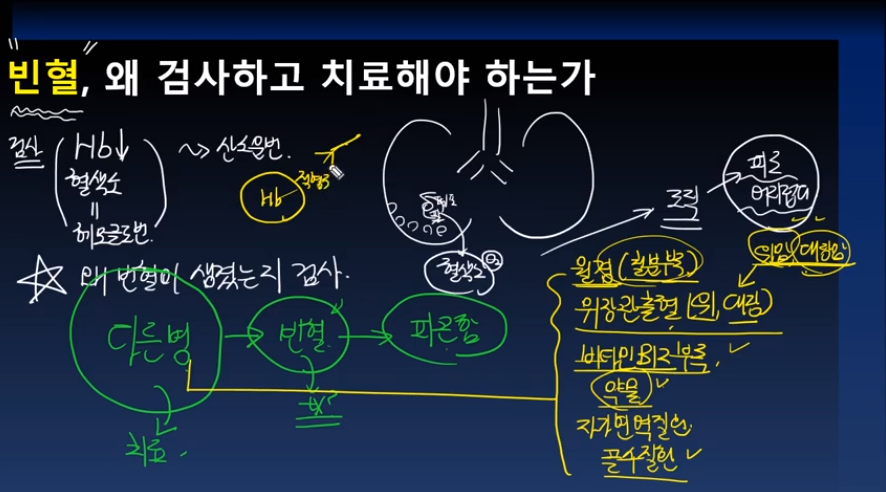
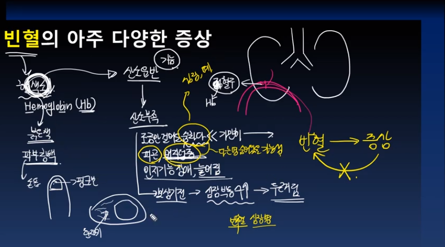
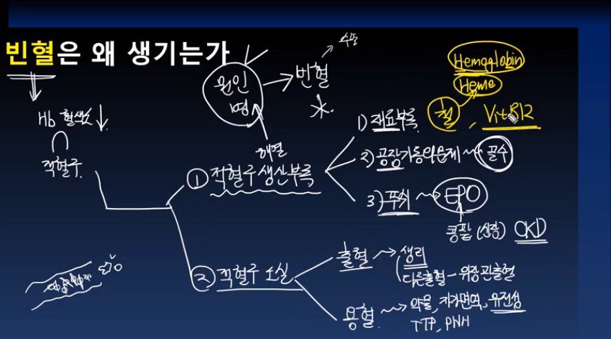
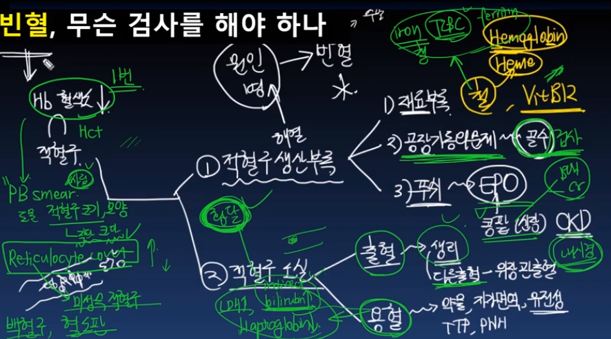
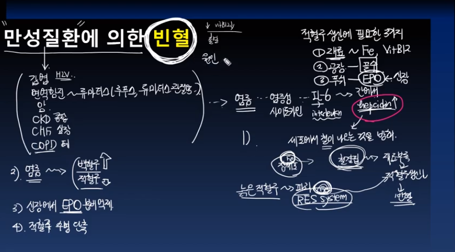
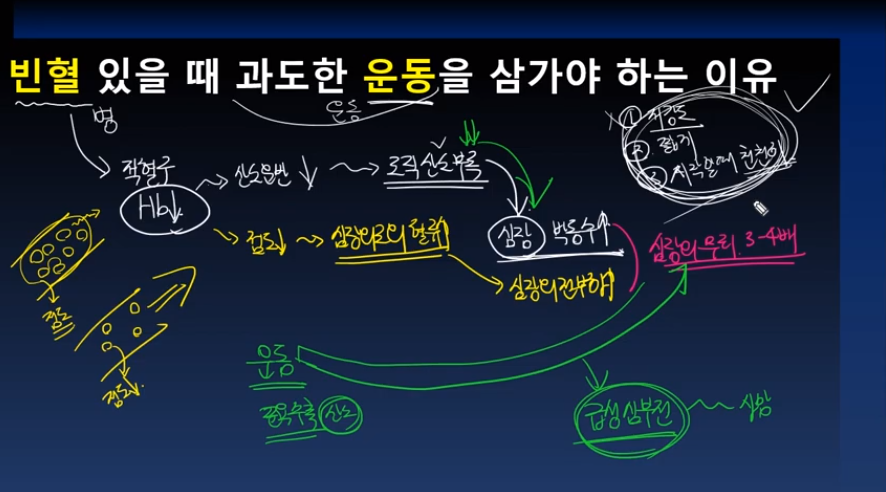
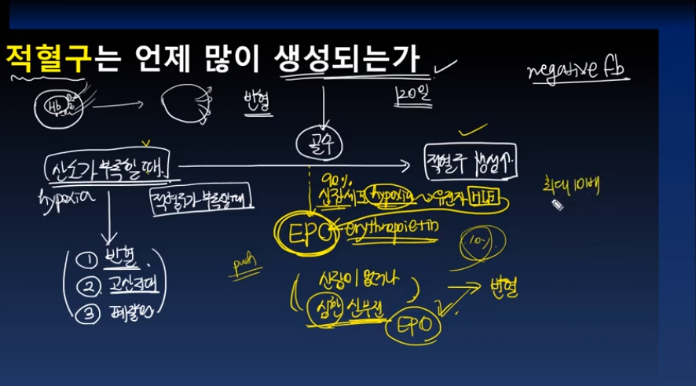
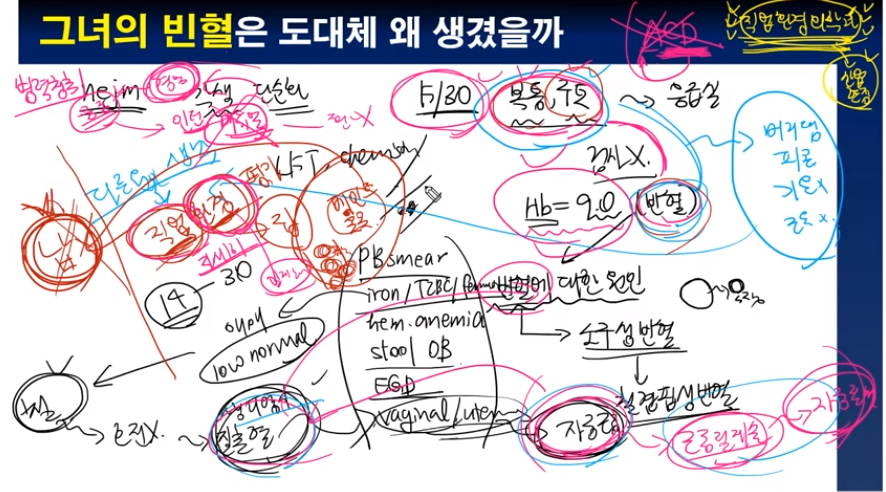
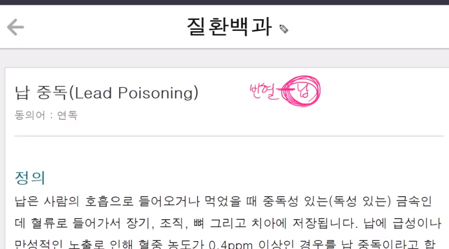
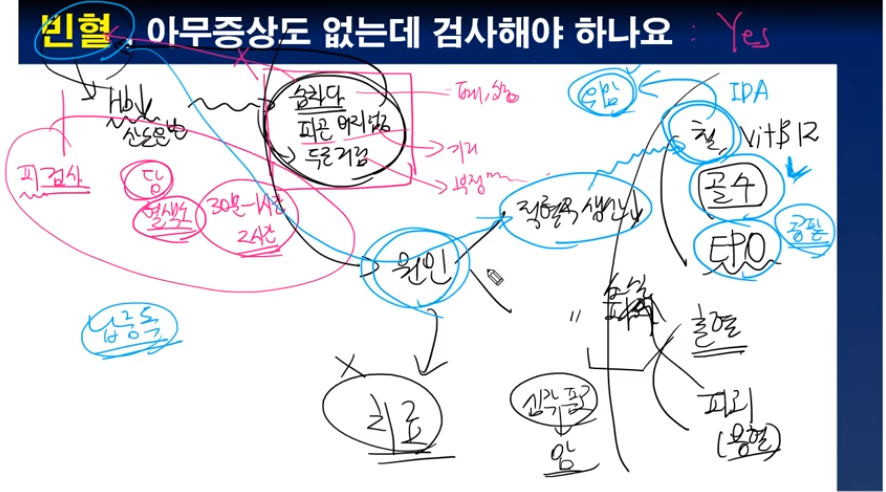

기역과 함께하는 깊이있는 의학공부
빈혈, 왜 검사하고 치료해야 하는가 youtube

빈혈의 아주 다양한 증상들 youtube

빈혈은 왜 생기는가 youtube

빈혈, 무슨 검사를 해야 하나 youtube

만성질환에 의한 빈혈 youtube

빈혈 있을때 운동 삼가야하는 이유 youtube

적혈구는 언제 많이 생성되는가 youtube

그녀의 빈혈은 도대체 왜 생겼을까 youtube

납중독, 의심하지 않고서 진단할 수 있을까 youtube

빈혈, 아무증상도 없는데 검사해야 하나요 youtube

맨위로